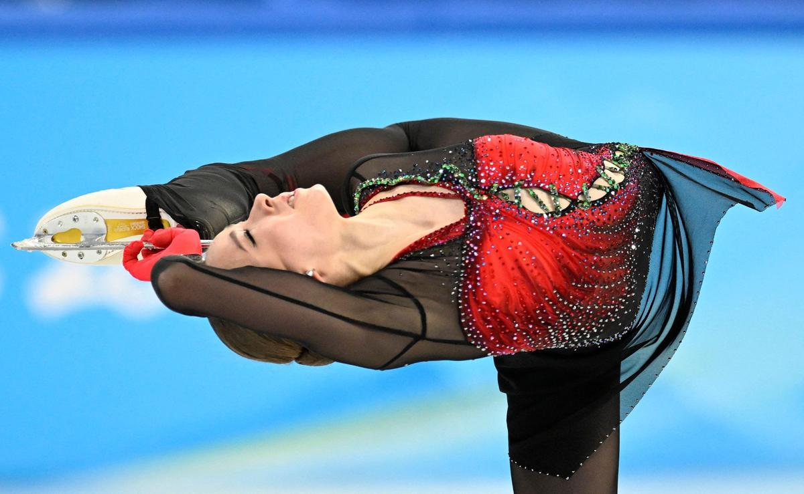

Die 15 jährige russiche eislaufkünstlerin Kamila Walijewa dopt bei den Olympischenspielen

Olympische Winterspiele - 15-jährige Eiskunstläuferin darf trotz Dopingverfahrens starten Die Russin Kamila Walijewa wurde im Dezember positiv auf ein Herzmittel getestet. Der Internationale Sportgerichtshof entschied im Eilverfahren gegen eine Sperrung.
zurück zur Startseite